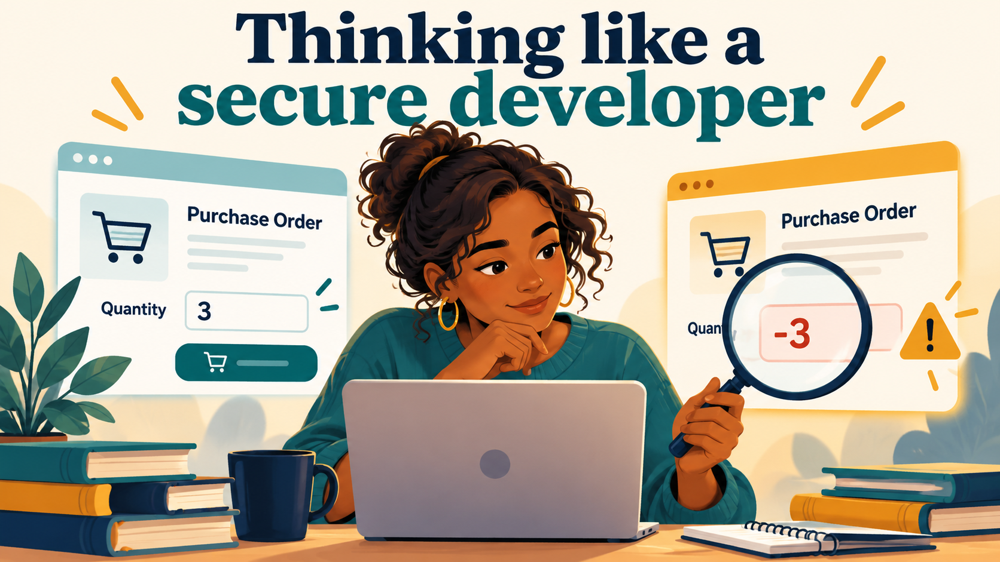
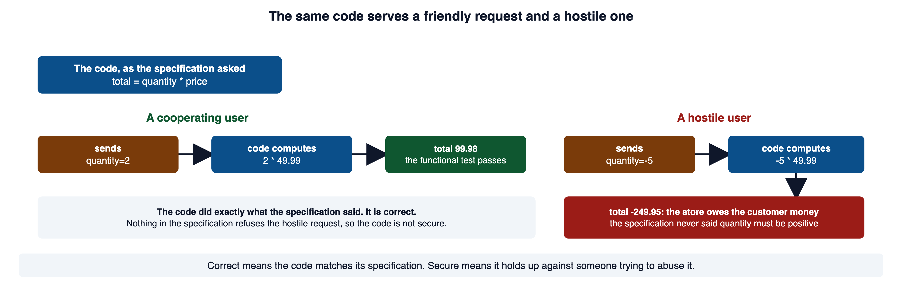
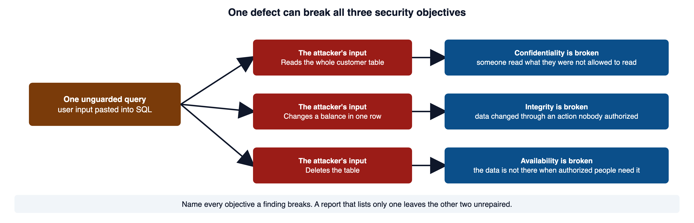
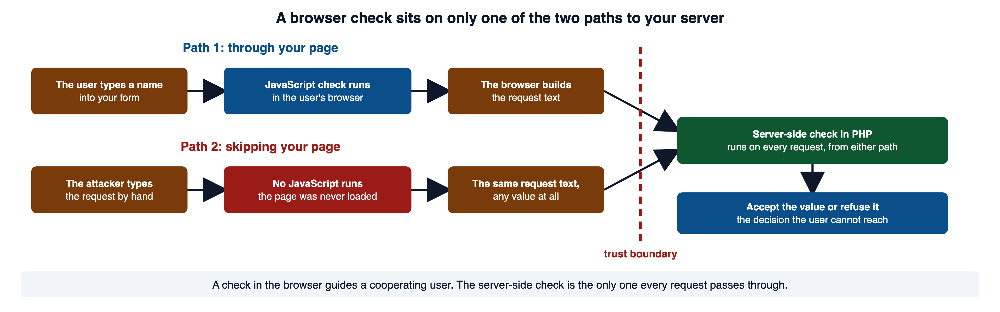
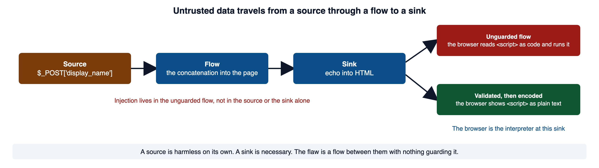
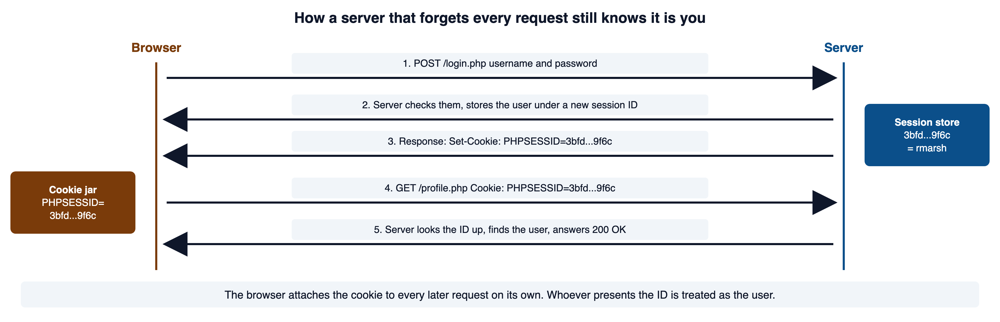
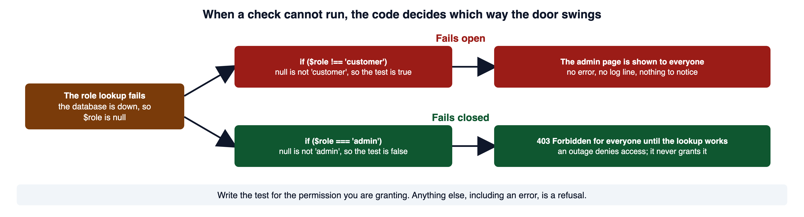

A customer orders two items, and the checkout calculates the right price. Another request sends a negative quantity, and the same checkout calculates a negative bill. Both requests run without an error. What rule did the developer leave out?
Secure development starts by deciding what the application must refuse. A working feature needs rules about who may use it, which values it accepts, and what happens when a dependency fails. This module introduces the concepts you use to explain those decisions: security objectives, trust boundaries, data flow, and secure design principles.

Open full-size image (opens in a new tab)Apply the course's Rules Of Engagement before any security test, including a test of a repair. Use your own authorized course environment and the permitted methods, because a reachable system is not permission to test it. The Orientation lab guide explains how to work in that environment. Code labeled Vulnerable illustrates a flaw; code labeled Secure illustrates the corresponding control. The examples identify behavior to investigate, rather than claiming that you have already observed it.
1Required reading
These three are required reading for the module. The lecture is self-contained; the readings give the same material in the industry's own words, which is what a scanner finding, a security advisory, or a bug report will use.
- OWASP Top 10:2025. The industry's ranked list of the risks that most often break web applications, with a short description of each. OWASP calls it a standard awareness document for developers.
- OWASP Secure Product Design Cheat Sheet. The principles taught in section 7 (least privilege, defense in depth, secure defaults, failing securely), stated the way a working security team states them.
- CLARK: Software Security Basics, Michael Tu, Purdue University Northwest. Introductory slides on software-security terms. CLARK needs a free account.
2Why software security matters
When software fails at security, the failure is concrete. Someone reads a record they were never allowed to see. Someone changes a value they were never allowed to change. Someone takes a service offline that other people were counting on. A single sign-in query written without care can hand over an entire customer table. A credential left in a repository can open systems that repository never touched. The consequences can reach customers, staff, and others whose information the application holds.
It is tempting to assume that software which passes its tests is safe. Functional testing asks one question: does valid input produce the expected output? That question is necessary. It is not enough. Security asks the adversarial version of it. What happens with input that is hostile, oversized, repeated out of order, or sent by someone with no authorization to send it?
Here is a checkout step written exactly as its specification asked. The specification said: multiply the quantity by the price.
<?php
// WHY: Casting to an integer does not enforce a positive quantity, so the calculation accepts values the business rule must refuse.
$price = 49.99;
$quantity = (int)($_POST['quantity'] ?? 0);
$total = $quantity * $price;
printf("Total due: %.2f\n", $total);Vulnerable. Why: Casting to an integer does not enforce a positive quantity, so the calculation accepts values the business rule must refuse.
A cooperating user sends quantity=2. A hostile user sends quantity=-5. The code handles both the same way.
Total due: 99.98
Total due: -249.95The word "correct" is more slippery than it looks. Correctness is measured against a specification. If the specification never described what the software must refuse to do for a hostile user, then the code can be completely correct and still be exploited. Nobody wrote down the rule it is breaking.

Open full-size image (opens in a new tab)The repair is to write the missing rule down and enforce it.
<?php
// WHY: The server rejects missing, invalid, and out-of-range quantities before calculating a bill.
$price = 49.99;
$quantity = filter_input(INPUT_POST, 'quantity', FILTER_VALIDATE_INT);
if ($quantity === false || $quantity === null || $quantity < 1 || $quantity > 25) {
http_response_code(400);
exit('Quantity must be a whole number from 1 to 25');
}
$total = $quantity * $price;
printf("Total due: %.2f\n", $total);Secure. Why: The server rejects missing, invalid, and out-of-range quantities before calculating a bill.
Security requirements are rarely present by default. They appear when someone deliberately sets out to write them. OWASP's Top 10 entry on insecure design says a secure design can still have implementation defects, and an insecure design cannot be fixed by a perfect implementation. Both halves matter: the rule has to exist, and the code has to enforce it.
OWASP Top 10:2025 A06 Insecure Design is the source for the design-versus-implementation point above. PHP Manual: filter_input documents the function in the repair, which returns false when the value fails the filter and null when the field is missing.
3The three security objectives
Security protects three properties of the data an application holds. Learn them by what happens when each one fails, because that is how you will recognize a failure in the wild.
Confidentiality fails when someone reads what they had no authorization to read: another customer's record, a private profile, a session identifier, or a password hash. The controls that hold it up are authentication, authorization, encryption, and secret management. A fifth is the cheapest and the most often forgotten: before you store a value, ask whether the application needs it at all. Data you never collected cannot be stolen from you.
Integrity fails when data changes through an action nobody authorized. A payment amount is altered in transit, a balance is edited by the wrong person, or a dependency is swapped for a malicious copy. The controls are authorization, input validation, integrity checks, audit logs, and a deployment path that cannot be modified from outside it.
Integrity failures are usually found last. Picture a scale that has drifted out of calibration. It does not throw an error or refuse to weigh anything. It keeps working and returns a confident, wrong number, and everyone downstream treats that number as fact. An integrity failure behaves the same way. The application keeps running, so nothing prompts anyone to look.
Availability fails through resource exhaustion, a destructive change, an unhandled error in the wrong place, or a dependency outage that spreads. The controls are rate limits, capacity planning, timeouts, safe error handling, backups, and a recovery procedure that has been rehearsed. A recovery plan you have never rehearsed is a document, and a plan is something you have run.
The three are not separate boxes. Each one is load-bearing on its own: an application with excellent encryption and broken authorization is not partially secure. It is insecure. They also fail together. One query that pastes user input into SQL can be turned into each of these:
-- confidentiality: read every row
SELECT * FROM customers WHERE id = 7 OR 1=1;
-- integrity: change a value nobody authorized
UPDATE customers SET balance = 0 WHERE id = 7;
-- availability: remove the data
DROP TABLE customers;
Open full-size image (opens in a new tab)Classify a finding as only an availability problem and you will tick that box and never report the other two.
NIST glossary: confidentiality, NIST glossary: integrity, and NIST glossary: availability give the statutory definitions quoted in the DEFINE block, each attributed to FIPS 200 and 44 U.S.C. 3542.
4Trust boundaries and untrusted input
A developer asks what a feature should do. A secure developer keeps going, and the extra questions are the substance of the discipline:
- What can the user control?
- What am I assuming, and what enforces that assumption?
- Where does data cross from an area I do not control into one I do?
- What is the worst request that still looks valid?
- What happens after a control fails?
The third question locates most vulnerabilities, so it gets a name.
Everything the browser sends to the server is composed by the client, and it arrives as structured text. Here is the request your browser sends when you sign in to your portal copy:
POST /login.php HTTP/1.1
Host: localhost:8080
Content-Type: application/x-www-form-urlencoded
Content-Length: 33
username=rmarsh&password=passwordFour parts carry meaning: the method (POST), the path (/login.php), the headers, and the body. Every one of them was written by whoever sent the request. There is no hidden channel alongside this text. Nothing proves the request came from your page, your form, or your browser at all. If you want the server to know something, it has to be in that text, and anything in that text can be forged. A program such as curl sends a request like this without loading any page first; the Orientation page Requests and Developer Tools shows how.
That is why the place code runs decides what it can enforce. Server-side code, which is PHP in this course, runs on the server rather than in the caller's browser. Under normal operation, the caller cannot edit that server code through a form. Client-side code, the HTML and JavaScript you send, runs in the user's browser, on the user's machine, under the user's control. They can read it, edit it, disable it, or skip your page entirely and compose the request by hand.
Here is a form that limits a display name to eighty characters, and a server that believes the form.
<?php
// WHY: The caller can bypass the form, so trusting its length check leaves the server rule unenforced.
// The form said: <input name="display_name" maxlength="80" required>
// so the server assumes the value is short and present.
$displayName = $_POST['display_name'];
save_display_name($displayName);Vulnerable. Why: The caller can bypass the form, so trusting its length check leaves the server rule unenforced.
A request typed by hand never saw the maxlength attribute. $_POST['display_name'] can hold ten thousand characters, or an array, or nothing at all. The server has to check again, on its own side of the boundary.
<?php
// WHY: The server checks presence, type, and character length because browser restrictions can be bypassed.
$displayName = $_POST['display_name'] ?? null;
if (!is_string($displayName) || $displayName === '' || mb_strlen($displayName, 'UTF-8') > 80) {
http_response_code(400);
exit('Display name is required and must be 80 characters or fewer');
}
save_display_name($displayName);Secure. Why: The server checks presence, type, and character length because browser restrictions can be bypassed.

Open full-size image (opens in a new tab)A check written in JavaScript guides a cooperating user and stops no attacker, because it runs on the attacker's computer. Client-side checks guide users. Server-side checks stop attackers. MDN says it the same way: never trust data passed to your server from the client, because a malicious user can alter the network request.
MDN: An overview of HTTP names the parts of a request (method, path, headers, body) and says HTTP is stateless, which section 6 builds on. MDN: Client-side form validation carries the warning quoted above. CWE-602: Client-Side Enforcement of Server-Side Security is the formal entry. PHP Manual: mb_strlen counts characters rather than bytes, which is why the secure example uses it.
5Source, sink, and flow
Your application is not the last stop for the data it receives. It passes that data onward to other interpreters. The database expects SQL. The browser expects HTML and JavaScript. Sometimes a shell expects a command, or a filesystem expects a path. Each of those is a separate language with its own parser, and each expects to receive a command. Suppose your code builds that command by pasting user input into a string. The parser on the far end cannot tell which characters came from you and which came from an attacker. It parses what it was handed.
Receiving input is not itself an injection vulnerability. The question is how the program uses that input at a sink. In code review, follow the value through assignments and function calls to find the control that keeps data separate from instructions.

Open full-size image (opens in a new tab)Here is the shape at its smallest, writing a name into a page:
<?php
// WHY: Writing caller-controlled text directly into HTML allows the browser to interpret markup as page instructions.
$displayName = $_POST['display_name'] ?? '';
echo 'Welcome, ' . $displayName;Vulnerable. Why: Writing caller-controlled text directly into HTML allows the browser to interpret markup as page instructions.
Submitted with Avery, this behaves correctly, which is the difficulty: it works, so nothing prompts a second look. Consider the illustrative input <script>steal(document.cookie)</script> in the same field. Here, steal is a hypothetical function, not a working test supplied by the course. The page sends this back:
Welcome, <script>steal(document.cookie)</script>The repair is to decide what you accept, and then make the value inert for the place it is going.
<?php
// WHY: Validation constrains the field and HTML encoding keeps accepted text from becoming markup at this output.
$displayName = $_POST['display_name'] ?? '';
if (!is_string($displayName) || mb_strlen($displayName, 'UTF-8') > 80) {
http_response_code(400);
exit('Invalid name');
}
echo 'Welcome, ' . htmlspecialchars($displayName, ENT_QUOTES | ENT_SUBSTITUTE, 'UTF-8');Secure. Why: Validation constrains the field and HTML encoding keeps accepted text from becoming markup at this output.
Welcome, <script>steal(document.cookie)</script>CWE-74: Injection is the general weakness class, and its entry lists the specific kinds beneath it. PHP Manual: htmlspecialchars documents each character the function converts and the flags. W3Schools: PHP htmlspecialchars() Function has a live editor for trying the call. MDN: Website security states the rule behind this section in one line: never trust data from the browser.
6Sessions, ambient authority, and the bearer credential
HTTP is stateless. RFC 9110 defines it that way: each request can be understood on its own, with no link to the request before it. PHP makes this concrete. A request arrives, the server runs your script from the top, builds the response, and discards everything in memory when the script ends. The next request starts from nothing.
A session supplies application state across requests. When you log in, the server generates an unguessable session identifier and stores your data under it. It hands the identifier to your browser in a Set-Cookie header. The browser sends the cookie on later requests that match its scope and delivery rules, and the server uses the identifier to retrieve the session. Domain, path, expiration, Secure, and SameSite settings affect when the cookie is sent.

Open full-size image (opens in a new tab)You can watch this in your own portal copy. A request for the profile page with no cookie is turned away:
GET /profile.php HTTP/1.1
Host: localhost:8080HTTP/1.1 302 Found
Host: localhost:8080
Date: Thu, 08 Oct 2026 16:17:44 GMT
Connection: close
X-Powered-By: PHP/8.5.8
Set-Cookie: PHPSESSID=12518a0ed33bd8e99529499c4abcc7fe; path=/
Expires: Thu, 19 Nov 1981 08:52:00 GMT
Cache-Control: no-store, no-cache, must-revalidate
Pragma: no-cache
Location: login.php
Content-type: text/html; charset=UTF-8The same request, carrying the PHPSESSID cookie that a successful sign-in produced, is answered with the page:
GET /profile.php HTTP/1.1
Host: localhost:8080
Cookie: PHPSESSID=3bfd7c12681bdf3a5f08d9dd1d5d9f6cHTTP/1.1 200 OK
Host: localhost:8080
Date: Thu, 08 Oct 2026 16:17:44 GMT
Connection: close
X-Powered-By: PHP/8.5.8
Expires: Thu, 19 Nov 1981 08:52:00 GMT
Cache-Control: no-store, no-cache, must-revalidate
Pragma: no-cache
Content-type: text/html; charset=UTF-8That is the point to hold onto. An accepted active session identifier lets the server retrieve the signed-in identity. It does not replace permission checks for each operation, and it does not establish that the user intended that operation.
The OWASP Session Management Cheat Sheet says the session identifier is temporarily equivalent to the strongest authentication method the application uses. Whoever captures it can fully impersonate the user.
A request that arrives carrying your valid session cookie is not proof that you intended it. The cookie can accompany a request when its delivery rules permit it. That includes a request triggered by another site's page, an image tag, or a form submitted by a script you never saw. The credential is valid. The intent behind the request is a separate question, and the cookie answers only the first one.
MDN: Using HTTP cookies describes Set-Cookie, the Cookie header, and session management as a use of cookies. RFC 6750, section 1.2 is the definition of a bearer token quoted above. OWASP Session Management Cheat Sheet is the source for the equivalence between the identifier and the login. PHP Manual: Session basics describes the identifier, the session cookie, and $_SESSION. PHP Manual: Session management basics lists the ways an identifier leaks, including identifiers in URLs. RFC 9110, section 3.3 is the definition of HTTP as stateless.
7Principles of the secure developer
A handful of principles cover most secure-coding decisions. None of them is a rule you apply once. Each is a habit you carry into every feature.
- Never trust input. Treat outside values as untrusted and check them before security-sensitive use, because their apparent source does not prove that they satisfy your rules.
- Validate and encode. Validation decides what you accept. Encoding makes an accepted value safe for the interpreter that receives it. They answer different questions, and you need both.
- Least privilege. Give each account and component the minimum access it needs. When something is compromised, its privileges are the ceiling on the damage.
- Defense in depth. Assume any single control can fail, and place another one behind it. The second layer is what stands when the first is bypassed.
- Secure defaults. The setting a system starts with should be the safe one. A user who changes nothing should get the protected behavior.
- Fail securely. When something goes wrong, deny the action and reveal nothing useful, rather than falling open and letting the request through.
- Keep secrets out of code. Passwords, API keys, and tokens do not belong in source files or anything you commit to a repository.
- Security is a property of the whole system. Configuration, dependencies, identity, data storage, and deployment all decide whether a feature is safe. The function alone does not.
The last principle is why a flawless function can sit inside a vulnerable feature.
Two of these principles have a code shape that people get backwards. The first is failing securely. Here the role lookup returns null when the database is unreachable, and the test was written for the role being refused instead of the role being granted. Run with a stub lookup_role that returns null and a stub show_admin_page that prints one line, the two versions print what the Output blocks show.
<?php
// WHY: A missing role differs from customer, so a negative role test can grant access during a lookup failure.
$role = lookup_role($userId); // returns null when the database is down
if ($role !== 'customer') {
show_admin_page(); // null is not 'customer', so the outage opens the door
}Vulnerable. Why: A missing role differs from customer, so a negative role test can grant access during a lookup failure.
admin page shown<?php
// WHY: Only an explicit admin role grants this operation; errors and unexpected values take the refusal path.
$role = lookup_role($userId); // returns null when the database is down
if ($role === 'admin') {
show_admin_page();
} else {
http_response_code(403);
exit('Forbidden'); // an outage denies access; it never grants it
}Secure. Why: Only an explicit admin role grants this operation; errors and unexpected values take the refusal path.
403 Forbidden
Open full-size image (opens in a new tab)The second is keeping secrets out of code. A credential typed into a source file runs fine and passes every test.
<?php
// WHY: A credential in source can be exposed through repository access and history without a runtime error.
$apiKey = 'EXAMPLE_KEY_DO_NOT_USE'; // shipped in the repository foreverVulnerable. Why: A credential in source can be exposed through repository access and history without a runtime error.
<?php
// WHY: Loading configuration at runtime separates the secret from source; a missing key stops the operation rather than selecting an unsafe fallback.
$apiKey = getenv('TECHCORP_API_KEY'); // read from the environment at run time
if ($apiKey === false || $apiKey === '') {
http_response_code(500);
exit('Server configuration error'); // refuse to run without it; never fall back to a default key
}Secure. Why: Loading configuration at runtime separates the secret from source; a missing key stops the operation rather than selecting an unsafe fallback.
The OWASP Secrets Management Cheat Sheet prefers a dedicated secrets manager and says environment variables are the fallback when a manager is not available. In this course's environment there is no secrets manager, so the portal's helpers read their keys from the environment, and the file that sets them never ships with the code.
OWASP Secure Product Design Cheat Sheet, security principles states least privilege, defense in depth, secure defaults, and failing to a secure state. NIST glossary: least privilege and NIST glossary: defense in depth give the standard definitions. CWE-636: Not Failing Securely and CWE-798: Use of Hard-coded Credentials are the entries for the two code shapes. OWASP Secrets Management Cheat Sheet is the source for the secrets-manager preference. PHP Manual: getenv confirms the function returns false when the variable does not exist.
8How the profession names weaknesses
Security work has a shared vocabulary, and two references supply most of it. Learning to read them now means a scanner finding or an advisory is legible to you from the first module.
The OWASP Top 10 is an awareness and prioritization document. It ranks the risks that break web applications most often and gives each a shared name, so a team can talk about "broken access control" and mean the same thing. The 2025 edition runs from A01, Broken Access Control, through A05, Injection, to A10, Mishandling of Exceptional Conditions. It is a map of where to look. It is not a checklist that proves an application is secure, and addressing all ten categories does not establish that anything is safe.
The numbers form a family. The general injection class is CWE-74. Beneath it sit the specific kinds. SQL injection is CWE-89, improper neutralization of special elements used in an SQL command. Cross-site scripting is CWE-79, improper neutralization of input during web page generation. Here is an illustrative scanner finding, not a result from your portal:
[High] CWE-79 Cross-site Scripting (reflected)
File: search.php, line 42
Parameter: q
Evidence: <script>alert(1)</script> returned unencoded in the response bodyCWE: About is MITRE's own definition of the list. CWE-89: SQL Injection and CWE-79: Cross-site Scripting are the two entries named above. CWE Top 25 lists the most common and impactful weaknesses as the profession currently ranks them, a companion to the Top 10 in section 1.
9The words you use to describe risk
A useful report distinguishes what was observed, what could happen, and what control is missing. These terms let another person evaluate that reasoning.
- Asset: something worth protecting.
- Threat: an actor or circumstance that can cause harm.
- Vulnerability: a weakness that can be used to cause harm.
- Exploit: a method that uses a vulnerability.
- Control: a safeguard that prevents, detects, or limits harm.
- Risk: likelihood combined with impact.
- Attack surface: every reachable way to interact with the system.
Those terms connect into one chain. Every secure-coding decision links four things: an asset that has value, a threat actor with a goal, a weakness that creates a path to the asset, and a control that blocks or limits that path. Code appears nowhere in that chain by itself, which is the point of the last principle in section 7.
Here is the same observation written twice.
Loose: "The search page is insecure."
Precise: "The search page (asset: customer records) reflects the q parameter
unencoded (vulnerability, CWE-79). Anyone who can send a link
(threat) can run script in a signed-in rep's browser (impact).
Encoding the value at the sink (control) removes the path."The second version names the asset, the weakness, who can use it, what they get, and what closes it. Someone can act on that. Nobody can act on the first.
Two of these terms are worth separating carefully. A vulnerability is a confirmed weakness. A scanner alert is a claim that one might exist, and it needs to be checked before you act on it. The OWASP Testing Guide says the same thing about tool output: review the findings carefully and weed out the false positives. In the same way, "we fixed it" is not "we verified it." The strongest evidence that a coding defense works is to re-run the original attack and watch it fail safely, where it used to succeed. A fix you have not re-tested is a claim about the code, and the re-run attack is the evidence for it.
NIST glossary: vulnerability, NIST glossary: threat, NIST glossary: risk, and NIST glossary: attack surface give the standard definitions; the risk entry says risk is a function of adverse impact and likelihood. OWASP Web Security Testing Guide: Introduction is the source for the false-positive rule.
10Common misconceptions
✕"It runs on localhost, so the code is safe."
Localhost limits who can reach the code today. It repairs nothing. Move the same code to a server and the weakness travels with it, unchanged.
✕"The user cannot change a hidden field."
Any value the client holds can be edited, or submitted without your page ever loading. The browser is the attacker's computer, and a hidden field is only hidden from a cooperating user.
✕"Security means encryption."
Encryption addresses specific confidentiality and integrity problems. Authorization, validation, safe configuration, logging, and availability controls are all still required. Encryption protects data; it does not decide who is allowed to ask for it.
✕"If it passes its tests, it is secure."
Functional tests confirm the feature works for a cooperating user. Correctness is measured against a specification, and a specification that never described hostile use cannot catch its abuse.
✕"A valid session cookie proves the user meant to send the request."
A browser can attach a cookie automatically when its delivery rules permit it. An accepted cookie establishes a session, not the user's intent to perform a particular action.
✕"The OWASP Top 10 is a checklist that proves an application is secure."
It is an awareness and prioritization document. Working through all ten categories tells you that you looked in the common places, not that nothing is wrong.
✕"A scanner finding means there is a vulnerability."
A finding is a claim that needs validation. A vulnerability is a confirmed weakness that can be used. Reporting the first as the second wastes the reader's time and your credibility.
11Check your understanding
Work these before you read the answers. The quiz draws on the same ideas.
- A page returns another customer's record after the
idin the URL is changed. Which security objective is most directly broken, and what check was missing? - Why is a value from a form untrusted even when the form used a dropdown that offered only three choices?
- HTTP is stateless, so how does the server know that this request came from someone who signed in a minute ago?
- What does it mean to call a session identifier a bearer credential?
- Your browser attaches the session cookie to a request that a different site's page caused you to send. Why does the browser do that, and what attack does it enable?
- What is the difference between a vulnerability and a scanner alert?
- Name the four parts of the chain that connects a secure-coding decision to the asset it protects.
- State the general definition of injection, and name one interpreter it can reach.
- Why is a check written in JavaScript not a security control?
- A role lookup returns
nullbecause the database is down. Write the one-line test that fails closed. - What is the strongest evidence that a fix works?
- Where, in this course, may you run a test or an exploit?
Answers: (1) confidentiality, with a missing authorization check that confirms this user may read this record. (2) the request can be altered or built by hand and sent without your page, so the dropdown constrains nothing on the server. (3) the browser sends back a session cookie the server issued earlier, and the server looks the user up by that identifier, so an accepted active identifier retrieves the signed-in identity. (4) it works for whoever presents it; the server checks possession, not the presenter, so a stolen active identifier can allow impersonation. (5) the browser sends eligible cookies automatically. That ambient authority can enable cross-site request forgery when the server lacks an appropriate request-intent control; SameSite and other cookie rules affect delivery. (6) a vulnerability is a confirmed weakness that can be used; an alert is a claim that needs validation. (7) an asset with value, a threat actor with a goal, a weakness that creates a path, and a control that blocks or limits it. (8) injection is untrusted data reaching an interpreter that reads part of it as a command instead of a value; it can reach the database, the browser, or a shell. (9) it runs in the browser, on the user's machine, where the user can edit, disable, or bypass it. (10) if ($role === 'admin'), so that null and every other value are refused. (11) re-running the original attack and watching it fail safely where it used to succeed. (12) your own authorized course environment, using the methods permitted by the course Rules Of Engagement.
12References and further study
The three required readings in section 1 and the links through the lecture are the main references. Each entry below names what it confirms.
- CLARK: Introduction to Software Securityclark.center
, Ida Ngambeki, Purdue University. A conceptual introduction to the field, companion to the required CLARK module in section 1.
- CLARK: Software Security Goals and Contextclark.center
, Bill Chu, UNC Charlotte. Slides and lab material on the security goals of section 3.
- CWE-352: Cross-Site Request Forgerycwe.mitre.org
The formal entry for the ambient-authority attack named in section 6; confirms the description quoted there.
- OWASP CSRF Prevention Cheat Sheetcheatsheetseries.owasp.org
Explains automatic cookie credentials, request-intent defenses, and the role and limits of SameSite.
- MDN: Set-Cookiedeveloper.mozilla.org
The response header in the section 6 responses, with the attributes a server can set on the session cookie.
- MDN: 302 Founddeveloper.mozilla.org
Confirms what the first portal response in section 6 means: go to the URL in the
Locationheader. - PHP Manual: $_POSTphp.net
The source used in sections 2, 4, and 5, and the two content types it reads.
- PHP Manual: http_response_codephp.net
The function every secure example uses to refuse a request with a status code.
- W3Schools: PHP Sessionsw3schools.com
A live editor for
session_start()and$_SESSION, the server side of section 6. - W3Schools: PHP Form Validationw3schools.com
A live editor for the server-side checks in sections 4 and 5.
- OWASP Application Security Verification Standardowasp.org
Requirements written so each one can be verified, the companion to the Top 10 when a question is whether a specific control is present.